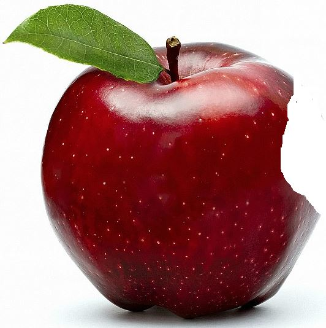

파일 경로
표태그
애니메이션
절대 경로
파일의 위치 전체를 작성
- 서버의 파일(폴더) 구조가 변경되면 url 수정
루트(최상위, root) 디렉터리
/
상대 경로
구조가 바뀌더라도 url을 수정할 일이 적음
현재 디렉터리 => 현재 문서와 같은 위치
./(생략 가능)

상위 디렉터리 => 현재 문서가 있는 폴더의 위치(=부모 디렉터리)
여우 이미지
css 폴더의 여우 이미지